Od 3D modela do gotovog
radioničkog crteža
Program koji iz kupčevog 3D modela i njegove tablice boja sam napravi kotirani 2D crtež, a za sve u što nije siguran pita konstruktora.
3D model s obojenim plohama i svoju tablicu boja
ručno, pogled po pogled, kotu po kotu, za svaki dio
je li svaka boja ispravno prevedena u kotu i toleranciju?
Isti posao za stotine sličnih dijelova: ploče, izbacivači, prirubnice.
Ista boja kod jednog kupca znači ±0,02, kod drugog dosjed H7. To treba pamtiti.
Rupa bez kote ili kriva tolerancija primijeti se tek u radionici.
STEP datoteka od kupca, s obojenim plohama
kupčev PDF, Word ili CSV: što koja boja znači
i pamti odgovore za idući put
PDF za radionicu, DXF za AutoCAD
Konstruktor više ne crta od nule: pregledava i odlučuje.
Kupac oboji plohe u 3D modelu. U njegovoj tablici piše što svaka boja znači: koliko točno ploha mora biti izrađena i kako.
Do sada je konstruktor to „prevodio” u kote i tolerancije ručno. DST čita boje sam i za svaku kotu zapisuje iz kojeg retka tablice dolazi.
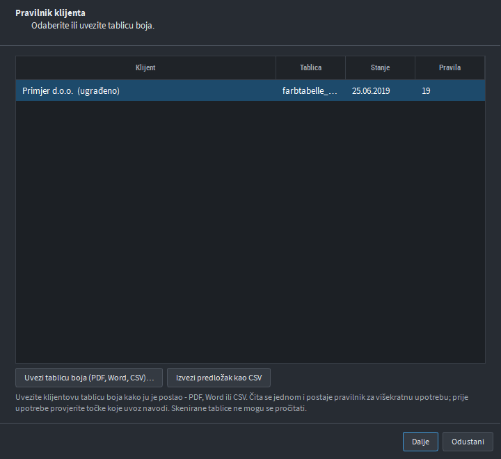
Na slikama su ogledni podaci; naziv klijenta je izmišljen.
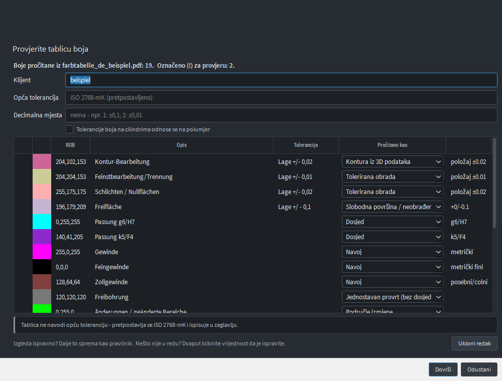
DST pročita tablicu i prikaže svaki redak: boju, opis, toleranciju i kako ga je razumio. Sumnjivi retci označeni su uskličnikom.
I kupčeve tablice imaju greške. Kod jednog klijenta ispisana vrijednost boje i nacrtani kvadratić nisu ista boja:
ispisano
0, 0, 255
nacrtano
0, 0, 200
Zato se svaki uvoz pregleda prije nego što postane pravilo. Svaki promijenjeni redak pamti kako je izvorno pročitan.
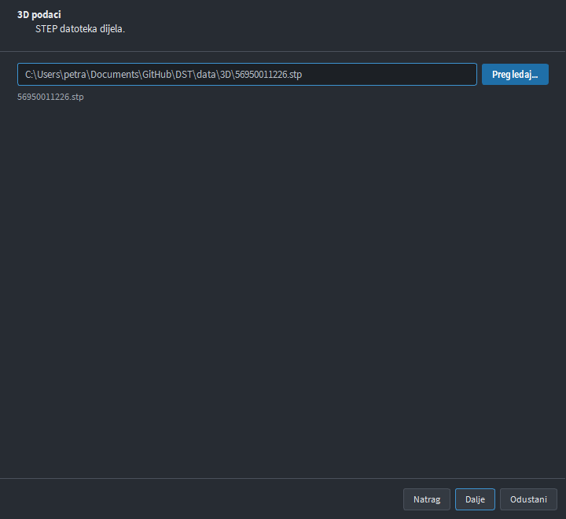
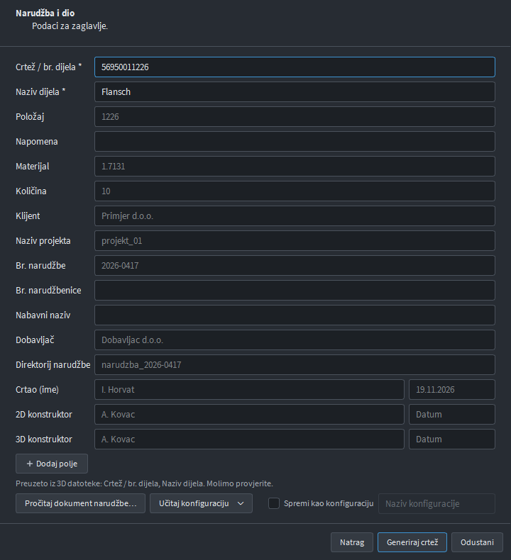
Jezični model za čitanje e-mailova dolazi s programom i radi samo lokalno. Ništa ne odlazi na internet. Svaku vrijednost mora doslovno pronaći u dokumentu, inače se odbacuje.
sve plohe, rubove i mjere dijela iz 3D datoteke
i za svaku plohu nađe redak u tablici klijenta
rupe, navoje, utore, skošenja, dosjede
samo one koje radionici trebaju, s pravom tolerancijom
poglede, presjek, kote i zaglavlje na A4, A3…
svaku kotu ponovno izmjeri; što nije sigurno, stavi u pitanja
Svaki dio predmeta završi negdje: na crtežu, u pitanju konstruktoru ili izričito „slijedi 3D model”, i to konstruktor potvrđuje.
Već napravljen crtež dijela pamti se, pa se otvori odmah, bez ponovnog računanja.
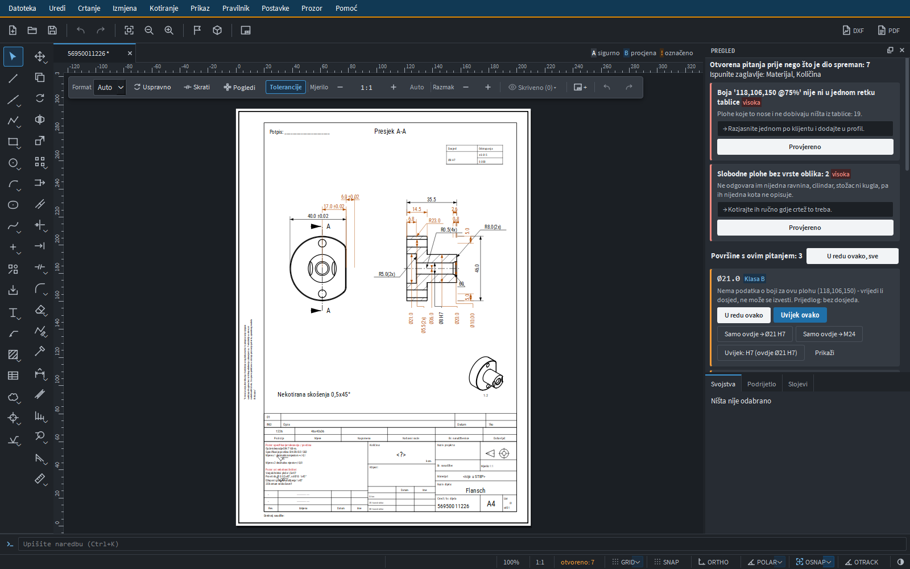
1 2 3 4 5Crtež na listubijel, točno kako će biti ispisan
Pregledsamo pitanja na koja treba odgovoriti
Alati za crtanjekao u AutoCAD-u
Naredbena linijaupišete naredbu, kao u AutoCAD-u
IzvozDXF i PDF jednim klikom
Dolazi izravno iz geometrije ili iz jasnog retka tablice boja. Ne treba ništa raditi.
Ispravno izmjereno, ali je izbor stvar prosudbe: od kojeg ruba mjeriti, polumjer ili promjer, je li dosjed. Konstruktor odlučuje.
Nešto ne štima: boja koje nema u tablici, ploha koju nijedna kota ne opisuje. Mora se riješiti.
Na listu se odmah vidi: crne kote su sigurne, obojene traže pogled. U DXF-u za AutoCAD su na zasebnim slojevima.
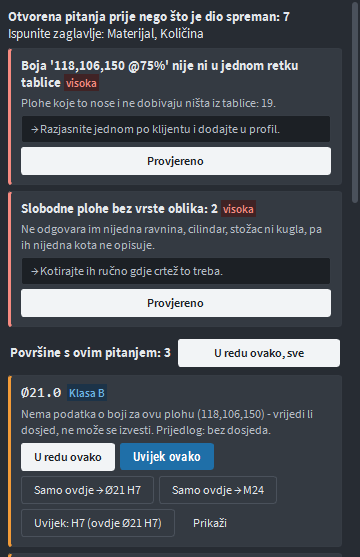
Gore piše koliko je pitanja još otvoreno. Svako pitanje ima tri odgovora:
Potvrđujem prijedlog.Pitanje nestaje s liste.
Drukčije, ali samo na ovom crtežu.Crtež se odmah preračuna.
Postaje pravilo ovog klijenta.Sprema se odmah, može se poništiti; idući put se više ne pita.
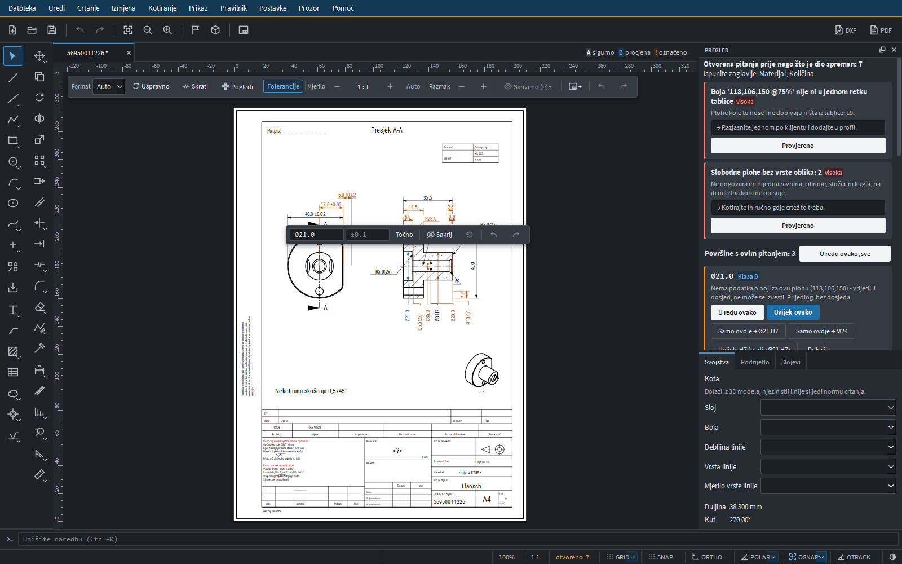
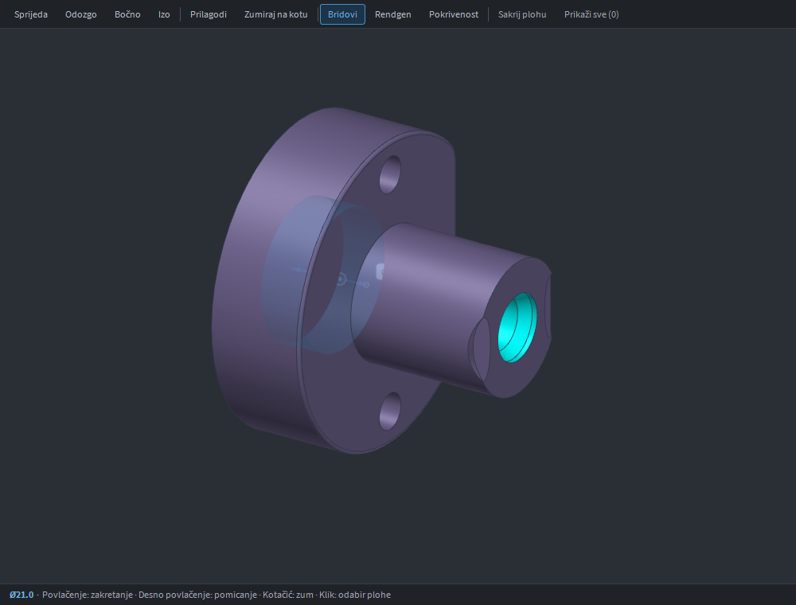
Klik na plohu u 3D prozoru odabere njezinu kotu na crtežu.
Isti izgled kao u kupčevom CAD-u, pa se boje lako uspoređuju s tablicom.
Mjeri se uvijek iz točne geometrije, nikad iz slike na ekranu.
* Zasad je tako. Planiramo pratiti i bilježiti svaku ručnu izmjenu, kako bi program s vremenom učio iz onoga što konstruktori ispravljaju (učenje s potkrepljenjem, engl. reinforcement learning).
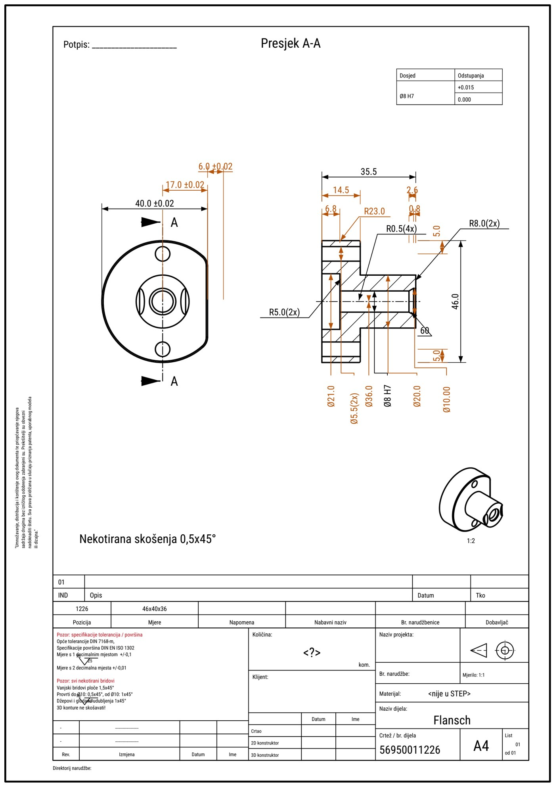
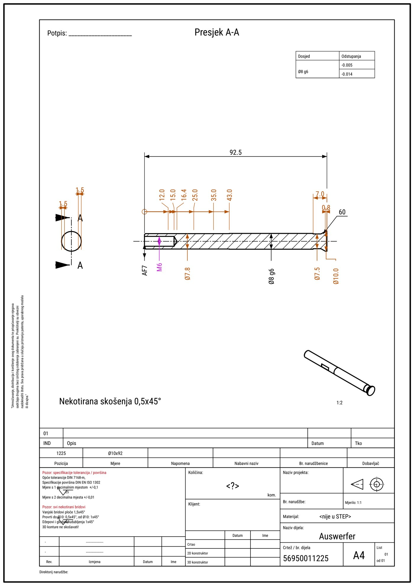
Za radionicu i kupca. Ravan, spreman za ispis.
Za AutoCAD i daljnje uređivanje: prave kote koje se mogu razvlačiti, a slojevi razdvajaju sigurno procjena provjeriti.
Radna datoteka: geometrija, pravilnik, zaglavlje i svaka odluka. Otvara se dvoklikom.
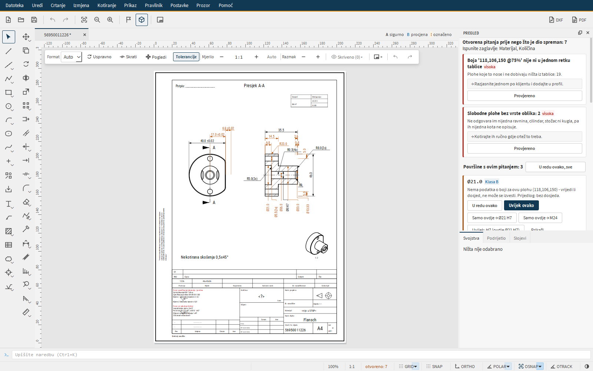
Povucite klizač preko slike.
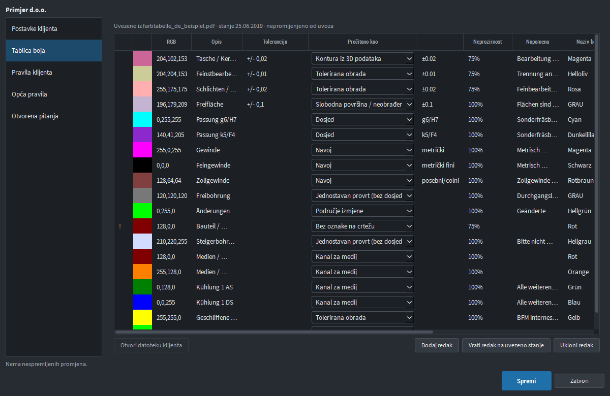
Sve što DST zna o klijentu nalazi se na jednom mjestu, u pet dijelova:
Postavke klijentaopća tolerancija, decimale, skošenja, navoji
Tablica bojasvaki promijenjeni redak pamti kako je izvorno pročitan
Pravila klijentasve spremljeno s „Uvijek ovako”, opisano riječima
Opća pravilašto DST uopće kotira; svako se uključuje i isključuje
Otvorena pitanjašto iz tablice nije jasno
Jedan gumb Spremi za sve. Prije spremanja DST pita treba li i otvoreni crtež slijediti novi pravilnik. Čuva se zadnjih 20 verzija, pa se svaka može vratiti.
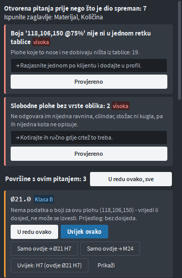
Ø21: boja nema podatak o dosjedu. Konstruktor klikne Uvijek ovako.
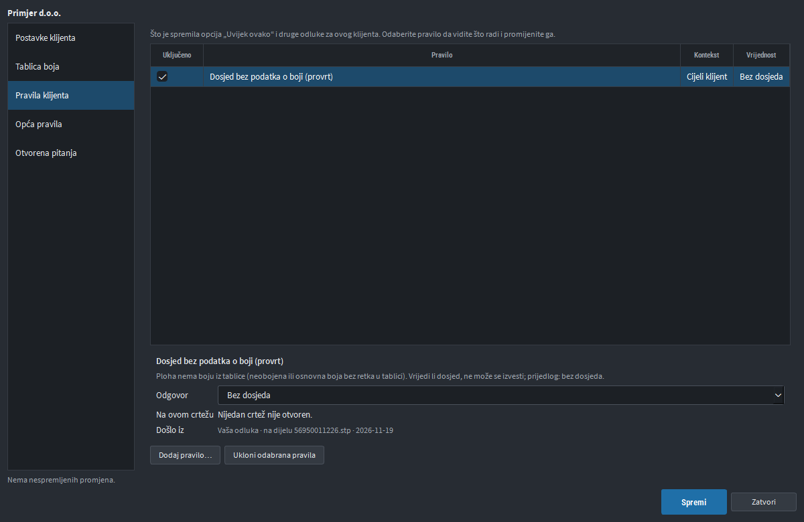
Sprema se odmah, nije potreban gumb Spremi.
Piše odakle je: čija odluka, na kojem dijelu i kojeg dana.
Može se poništiti s Ctrl+Z ili izbrisati u pravilniku.
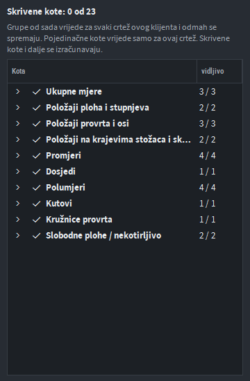
Ploča Uklj./Isklj. (Ctrl+5): cijela skupina kota, npr. sve polumjere, isključite jednim klikom. To vrijedi za tog klijenta i ubuduće.
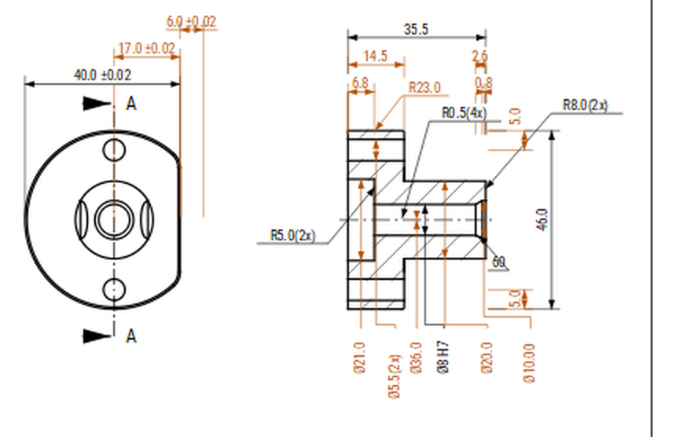
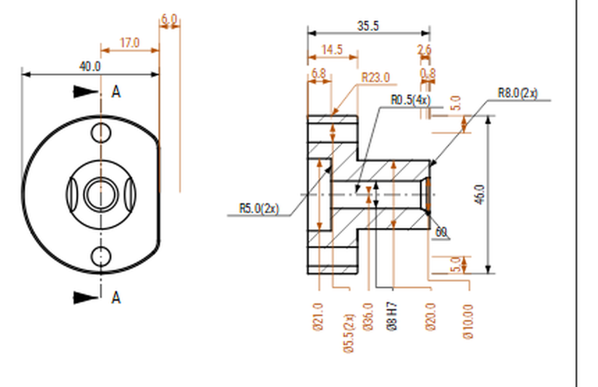
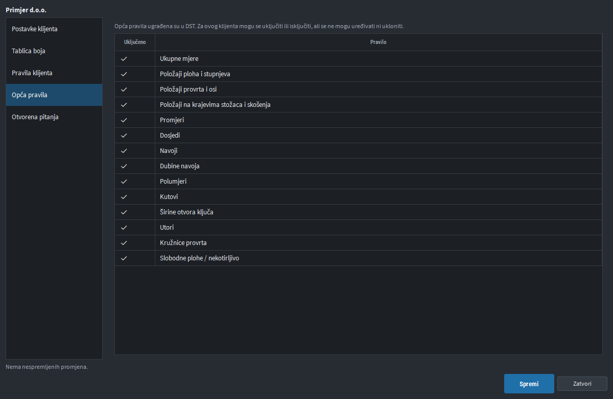
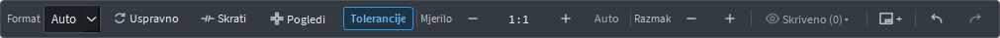
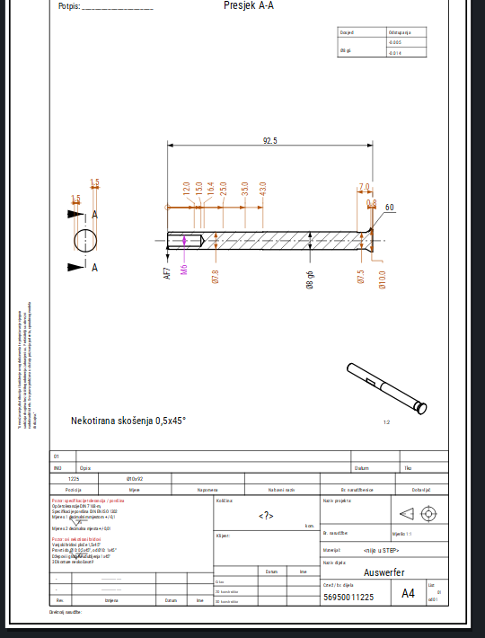
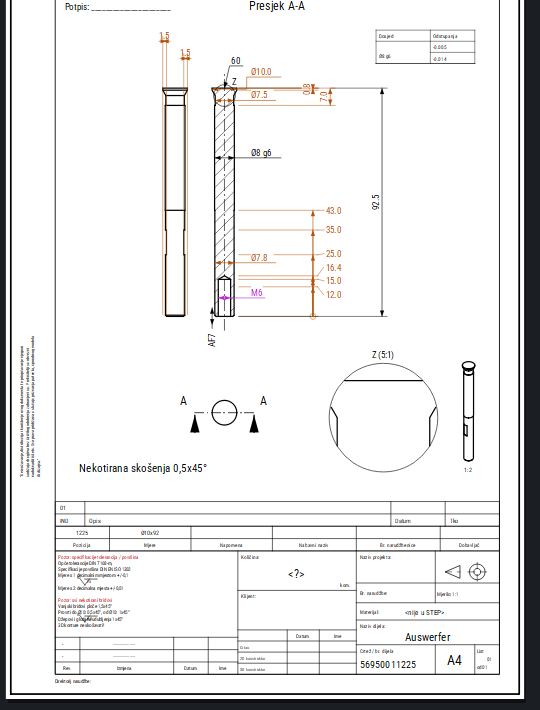
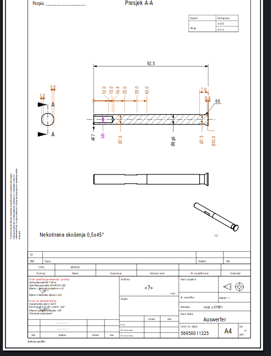
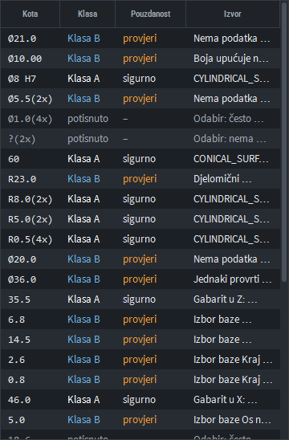
svaka kota: klasa, provjera, izvor
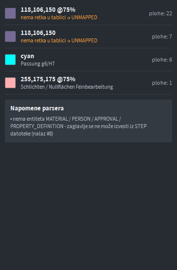
koje boje dio ima i nalaze li se u tablici
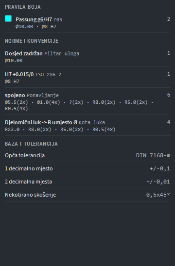
koje je pravilo dalo koju kotu
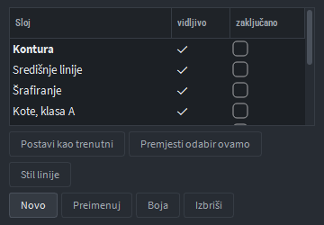
kao u AutoCAD-u: vidljivo, zaključano
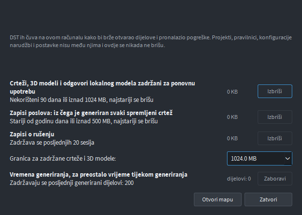
što se čuva, ograničenje, brisanje
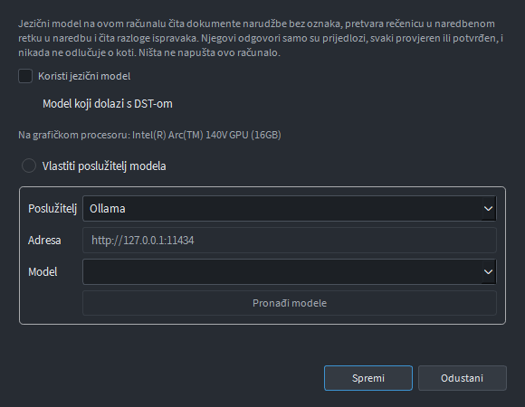
uključen ili isključen; samo lokalno
Postavke u izborniku: zaglavlje (Ctrl+T), konfiguracije narudžbi (Ctrl+D), hvatanje objekata, jezik i tema. Svaka ploča se otvara iz izbornika Prozor ili tipkom.
4 klijenta, s crtežima koje su konstruktori odobrili. Na njima smo razvijali pravila, pa su brojke ovdje najbolje.
3D model i crtež koji je kupac odobrio. Uspoređuje se svaki broj s kupčevog crteža.
Svi dijelovi osim 25 referentnih, uključujući 46 iz skupa 2; većinom novi klijenti. Provjera samo prema 3D modelu i tablici boja.
Pravi test su uvijek novi dijelovi: sljedeća serija parova ocjenjuje se jednom, prije podešavanja.
| Mjera | Svih 25 dijelova |
|---|---|
| Ništa ne propadne (na listu ili u pitanju) | 100,0 % |
| Bez dorade cilj ≥ 80 % | 83,2 % |
| Pitanja cilj ≤ 20 % | 16,8 % |
| Jednostavni dijelovi: prijedlozi točni cilj ≥ 80 % | 90,3 % |
| Prijedlozi u pitanjima točni | 84,1 % |
| Točnost kota na listu | 85,2 % |
| … računajući razlike u stilu kao točne | 87,8 % |
| Pronađeno na samom listu | 87,2 % |
| F1 (točnost i pronalaženje zajedno) | 86,2 % |
| Strogo čisto (samo što je na odobrenom crtežu) | 70,9 % |
| Kota na listu / pitanja nude opcija | 311 / 535 |
| Mjere koje ne prođu ponovno mjerenje | 0 |
| Značajke dijela s jasnim krajem | 2684 / 2684 |
| … na listu · u pitanju · „slijedi 3D model” | 486 · 500 · 1698 |
| Tolerancije po izvoru, list + pitanja (sam list) | 87/87 (72/87) |
| Dosjedi i navoji, list + pitanja (sam list) | 9/9 (6/9) |
| Po klijentu | Dij. | Kota | Bez dorade | Pitanja | Prijedl. točni | Točnost | Na listu | Strogo |
|---|---|---|---|---|---|---|---|---|
| Klijent A | 2 | 42 | 82,4 % | 17,6 % | 100 % | 90,5 % | 100 % | 74,5 % |
| Klijent B | 3 | 88 | 89,8 % | 10,2 % | 90,0 % | 85,2 % | 98,3 % | 76,5 % |
| Klijent C | 15 | 75 | 70,1 % | 29,9 % | 78,1 % | 66,7 % | 60,8 % | 46,7 % |
| Klijent D | 5 | 106 | 89,8 % | 10,2 % | 83,3 % | 96,2 % | 96,8 % | 86,4 % |
| Po složenosti | Dij. | Kota | Bez dorade | Pitanja | Prijedl. točni | Točnost | Na listu | Strogo |
|---|---|---|---|---|---|---|---|---|
| jednostavni | 11 | 184 | 85,6 % | 14,4 % | 90,3 % | 87,0 % | 96,5 % | 74,4 % |
| srednji | 10 | 106 | 81,5 % | 18,5 % | 83,3 % | 87,7 % | 88,4 % | 71,5 % |
| složeni | 4 | 21 | 72,4 % | 27,6 % | 62,5 % | 57,1 % | 40,0 % | 41,4 % |
„Ništa ne propadne” je 100 % kod svakog klijenta i u svakoj skupini. Klijent C crta samo glavne mjere, a ostalo prepušta 3D modelu, pa više pita; njegova pitanja nude do 47 opcija. Cilj nije ispunjen za svakog klijenta posebno, nego ukupno.
Pravila su pisana gledajući ove dijelove, pa su brojke ovdje malo optimistične. Provjera s izostavljenim crtežom ili cijelim klijentom: F1 85,8 % i 86,2 % prema 86,9 %.
| Mjera | Svih 46 (41 ocijenjeno) |
|---|---|
| Ništa ne propadne (ista mjera ili istovrijedna) | 96,4 % 745/773 |
| … od toga ista vrijednost · s druge točke | 712 · 33 |
| Pronađeno na samom listu | 81,9 % |
| Točnost kota na listu | 52,1 % |
| F1 (točnost i pronalaženje zajedno) | 63,7 % |
| Bez dorade | 83,7 % |
| Pitanja | 16,3 % |
| Tolerancije s crteža na samom listu | 5,5 % 3/55 |
| Tolerancije s crteža, list + pitanja | 43,6 % |
| Tolerancije ispisane drukčije | 0 |
| Listovi bez vidljivih problema | 44 / 46 |
Ovdje se uspoređuju samo brojevi s kupčevog crteža. Mjera od drugog ruba ili druge točke broji se kao promašaj, iako opisuje isto, pa je točnost na listu podcijenjena. Najveća rupa su tolerancije: od 55 tolerancija s ovih crteža samo 3 stoje na našem listu, a 21 se nudi u pitanjima.
5 dijelova nije ocijenjeno: njihov PDF nema tekst koji se može pročitati.
| Narudžba | Dij. | Ništa ne propadne | Na listu | Točnost | Tolerancije |
|---|---|---|---|---|---|
| N1 | 9 | 97,0 % | 92,5 % | 57,8 % | 0/3 |
| N2 | 4 od 7 | 93,5 % | 76,1 % | 51,0 % | 0/5 |
| N3 | 1 | 100 % | 90,0 % | 57,1 % | 1/3 |
| N4 | 1 | 100 % | 71,4 % | 13,0 % | 0/1 |
| N5 | 5 | 93,7 % | 77,9 % | 64,5 % | 2/20 |
| N6 | 2 | 100 % | 66,7 % | 66,7 % | 0/8 |
| N7 | 1 | 71,4 % | 71,4 % | 25,9 % | 0/1 |
| N8 | 4 | 100 % | 88,9 % | 58,8 % | – |
| N9 | 1 | 71,4 % | 42,9 % | 13,6 % | – |
| N10 | 2 | 87,5 % | 75,0 % | 44,4 % | 0/1 |
| N11 | 1 od 3 | 85,7 % | 7,1 % | 25,0 % | 0/1 |
| N12 | 1 | 83,3 % | 66,7 % | 3,7 % | – |
| N13 | 2 | 100 % | 80,0 % | 42,3 % | 0/2 |
| N14 | 2 | 100 % | 85,7 % | 65,0 % | 0/5 |
| N15 | 5 | 100 % | 89,0 % | 66,0 % | 0/5 |
| Po klijentu | Dijelova | U redu | Za pogled | Greška | Nije nacrtano | Pitanja | Bez problema | Obojene plohe |
|---|---|---|---|---|---|---|---|---|
| Skup 2 | 46 | 44 | 2 | 0 | 0 | 16,3 % | 95,7 % | 3/3 |
| Klijent C | 6 | 0 | 6 | 0 | 0 | 30,8 % | 100 % | 0/0 |
| Klijent D | 47 | 43 | 4 | 0 | 0 | 7,6 % | 91,5 % | 182/182 |
| Klijent E | 101 | 96 | 5 | 0 | 0 | 12,9 % | 95,0 % | 265/265 |
| Klijent F | 584 | 497 | 82 | 0 | 5 | 12,3 % | 85,8 % | 6652/6652 |
| Klijent G | 137 | 106 | 31 | 0 | 0 | 13,3 % | 77,4 % | 6964/6964 |
| Klijent H | 23 | 14 | 9 | 0 | 0 | 10,4 % | 60,9 % | 346/346 |
| Novi klijent | 10 | 7 | 3 | 0 | 0 | 15,1 % | 70,0 % | 303/303 |
| Svi | 954 | 807 | 142 | 0 | 5 | 12,3 % | 85,7 % | 14715/14715 |
| Po složenosti | Dijelova | Kota na listu | Pitanja | Opcija u pitanjima |
|---|---|---|---|---|
| jednostavni | 504 | 9758 | 14,6 % | 3886 |
| srednji | 322 | 8341 | 11,6 % | 2369 |
| složeni | 123 | 4951 | 8,9 % | 3567 |
| Mjera | Svih 954 |
|---|---|
| Značajke s jasnim krajem | 160 204, sve |
| … „slijedi 3D model” | 114 910 (71,7 %) |
| Bušene osi: u tablici · kotirane · 3D | 2625 · 2906 · 15 |
| Kose rupe u tablici | 1694 / 1710 |
| Natpisi dalje od 60 mm od dijela | 649 / 22 408 |
| Dijelovi s dalekim natpisima | 101 |
| Dijelovi s premalim pogledom | 54 |
| Rupe prepuštene 3D modelu | 6 |
U redu: sve provjere prolaze. Za pogled: crtež postoji, ali nešto treba pogledati. Greška: mjera koja nije točna; takvih nema. Granice od 60 mm i 10 % površine su naša procjena, ne norma. Ove listove još nijedan konstruktor nije pregledao.
Prvo: program je ispisivao sve što je mogao
kota na 25 crteža
od toga 591 označena za provjeru
samo 43 % odgovara odobrenom crtežu
Sada: bira kao konstruktor
kota na istih 25 crteža
85 % odgovara odobrenom crtežu
ostatak su točne mjere koje je konstruktor izostavio
Pretrpan crtež nije sigurniji crtež. Radionica treba ono što treba, ni više ni manje.
Tolerancija dolazi iz kupčeve tablice. ISO 2768-mK samo gdje kupac ne kaže ništa. Svaka kota pamti odakle joj tolerancija.
Navoj na neobojenoj osovini ili utor za uskočnik ne vide se u 3D modelu. Zato se pita, nikad pretpostavlja.
Ručne izmjene vrijede za jedan crtež. Pravila klijenta mijenja samo izričit odgovor „Uvijek ovako”, i to se može poništiti. Zasad: planiramo učenje iz bilježenih ručnih izmjena.
Crteži i jezični model ostaju na računalu. Kupčevi podaci ne odlaze nikamo. Program ništa ne šalje sam.
Tipke, naredbe, hvataljke i miš kopiraju AutoCAD. Konstruktori ne moraju učiti novi program.
Jedna setup datoteka, bez administratorskih prava. Pomoć → Prijavi problem složi sve za nas u jedan zip.
Danas izvoz uvijek radi, a samo statusna traka kaže koliko je pitanja otvoreno. Sama datoteka to ne kaže.
DXF smo provjerili programski, ali ga još nijedan konstruktor nije otvorio u AutoCAD-u.
Ako ploča ima više od tri rupe bez položaja, DST ih numerira i stavi u tablicu, umjesto da list zatrpa kotama. Taj oblik smo smislili mi; nijedan konstruktor ga još nije vidio.
Na ploči se rupe vide samo kao krugovi; dubina, upusti i navoji vide se tek u presjeku. Kupčevi crteži takve ploče režu. DST to još ne radi.
Dvije paralelne plohe danas se pišu kao ključni otvor (SW), i kad između njih nema valjka, npr. utor ili gravura.
Ukupna duljina koja nije okrugla, npr. vodilica od 176,11 mm, danas se samo nudi u pitanjima jer je odobreni crteži izostavljaju.
DST zna kad rupa vidljiva samo odozgo traži pogled odozgo. Danas ga samo predlaže u izborniku.
| Dio | Klijent | Složenost | Kota na odobrenom crtežu | Ništa ne propadne | Bez dorade | Pitanja | Točnost na listu | „Slijedi 3D model” |
|---|---|---|---|---|---|---|---|---|
| dobar Prihvat držača | D | srednji · 136 značajki | 22 | 22/22 | 94,6 % | 5,4 % | 97,1 % | 41 |
| dobar Jezgra | B | jednostavan · 18 | 25 | 25/25 | 94,1 % | 5,9 % | 87,5 % | 0 |
| dobar Jezgra, mala | D | jednostavan · 11 | 10 | 10/10 | 88,9 % | 11,1 % | 100 % | 0 |
| slab Dio kalupa | C | složen · 748 | 8 | 8/8 | 77,8 % | 22,2 % | 28,6 % | 705 |
| slab Dio kalupa, srednji | C | srednji · 42 | 6 | 6/6 | 60,0 % | 40,0 % | 50,0 % | 5 |
| slab Umetak kalupa | C | složen · 408 | 3 | 3/3 | 60,0 % | 40,0 % | 100 % | 310 |
I kod najslabijih ništa ne propadne: svaka kota s odobrenog crteža je na listu ili u pitanju.
Sva tri slaba su od klijenta C, koji crta samo nekoliko glavnih mjera, a sve ostalo prepušta obojenom 3D modelu.
Crtež s 3 kote: jedno pitanje više ili manje pomakne rezultat za 20 %.
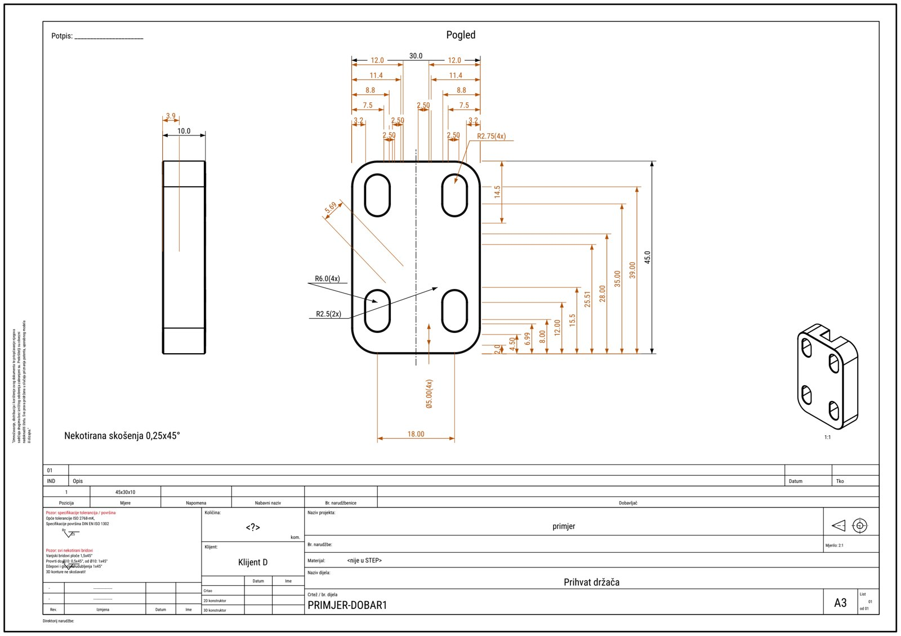
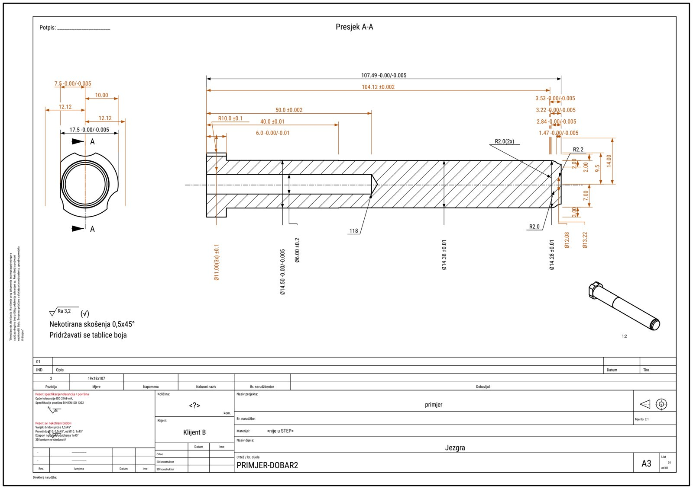
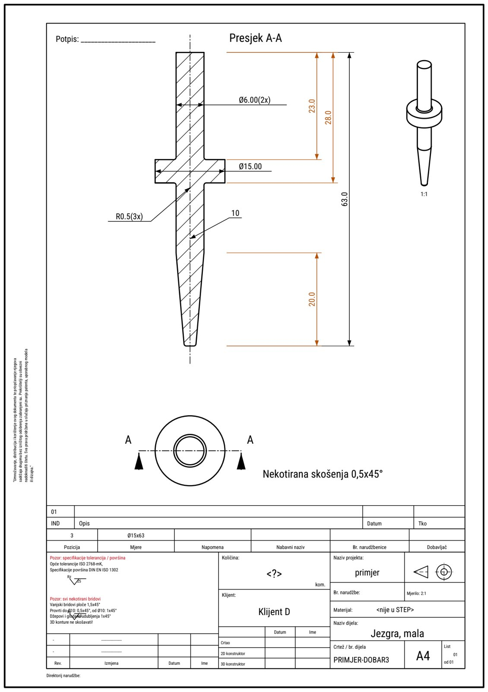
Nema pitanja o tolerancijama ni o 3D modelu: svaka ploha je na listu.
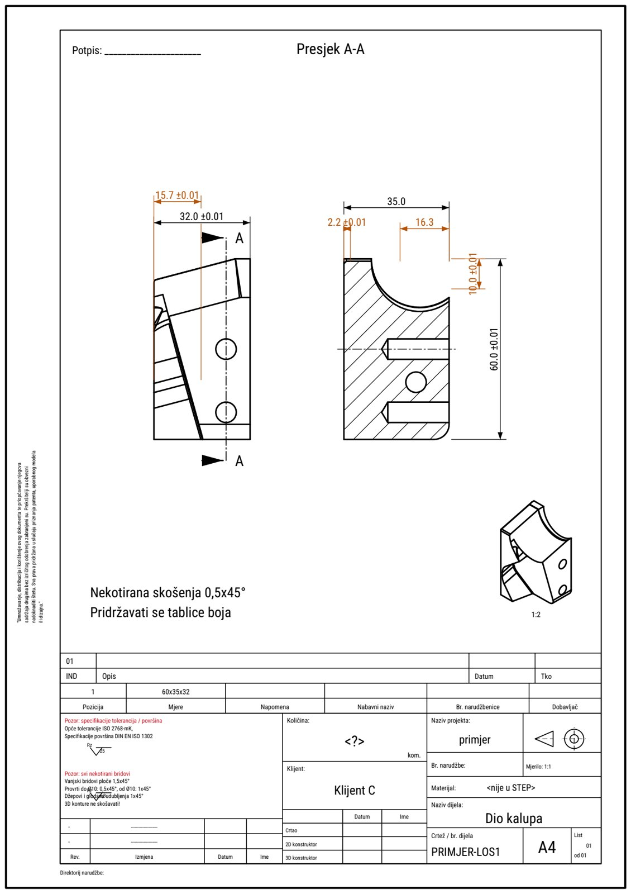
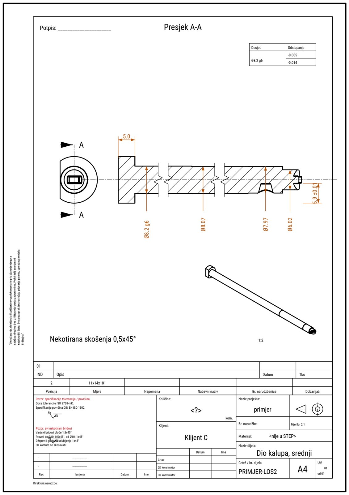
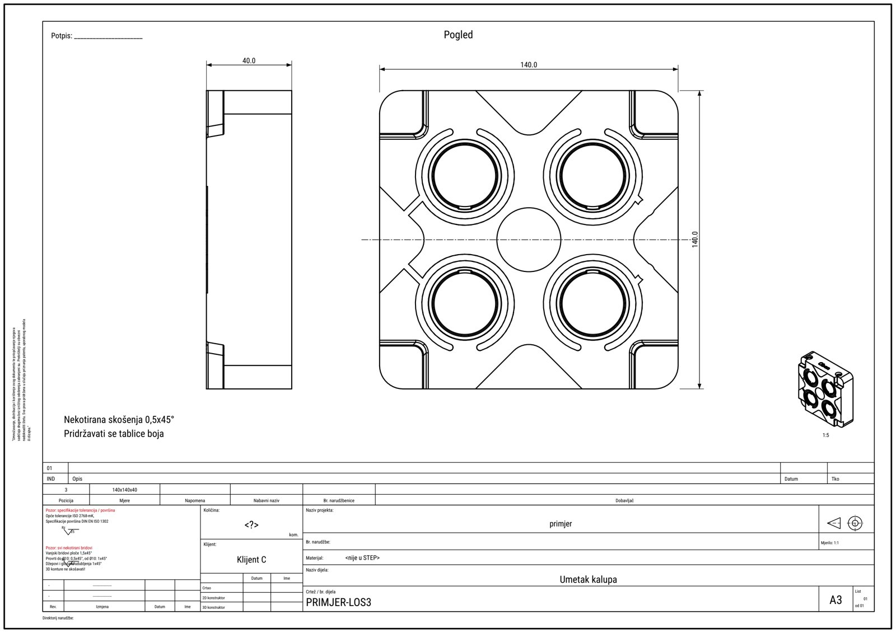
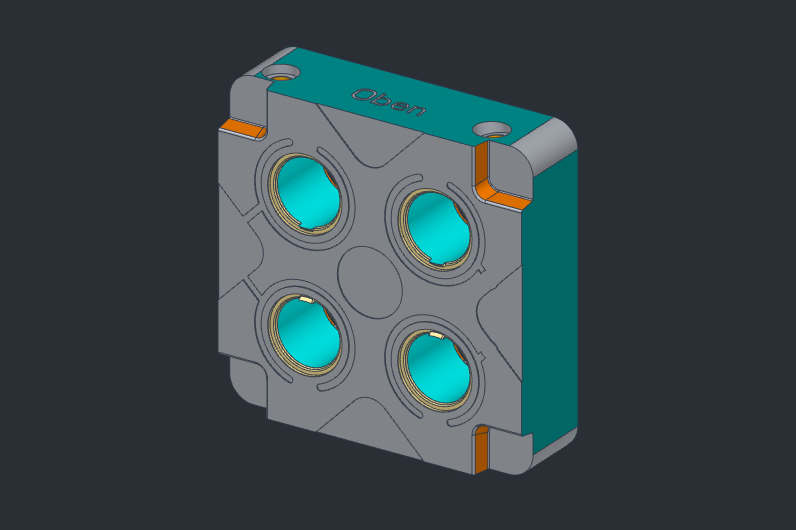
Pitanja?
Sad uživo u programu: novi crtež od nule.